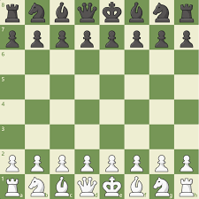
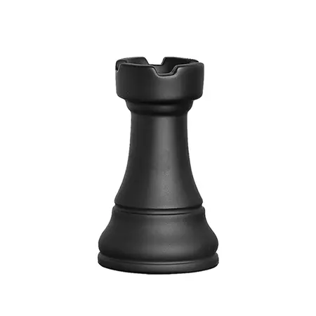

Projeto de xadrez do 6°CPM
Benefícios de jogar xadrez
Jogar xadrez ajuda a melhorar a memória porque precisamos lembrar das jogadas e estratégias. Também aumenta a concentração, pois precisamos focar muito no tabuleiro e nas peças.
No xadrez, é preciso pensar várias jogadas à frente e analisar as possíveis consequências, o que desenvolve o pensamento crítico. Durante uma partida, tomamos decisões importantes rapidamente, ensinando-nos a tomar decisões melhores e mais rápidas na vida real.